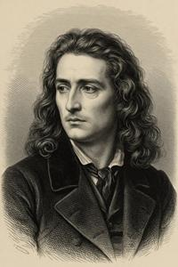
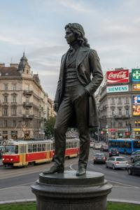

Эньо Жлутоводый
{kind=link}

Эньо Жлутоводый (згур. Enjo Zslutovodyj; дегл.: Enö Žlutovodyj; глаг.: ⰅⰐⰦ ⰆⰎⰖⰕⰑⰂⰑⰄⰬⰋ; лат.: Eugenius Aquaflavus; 1823–1851) — поэт, учёный и издатель, общепризнанный отец-основатель Славянского возрождения в Бывшей Верхней Паннонии.
Ранние годы и образование
Жлутоводый родился в Жлутых Водах (букв. «жёлтые воды») — селении при горячих сернистых источниках. Его семья принадлежала к мелкому дворянству; предки служили командирами граничар на габсбургской Военной Границе. В селении жили как згурцы, так и дегляне, а Жлутоводый никогда не называл себя ни тем, ни другим. Вопрос о его этнической принадлежности по сей день не решён и остаётся острой темой в згуро-деглянских дискуссиях.
Эньо учился во Вроновицкой Академии наук — будущем Старом университете, — где изучал классические языки и католическое богословие, а также глаголическую письменность и славянское богослужение на её Славянском факультете. Студентом он участвовал в дискуссионном кружке, где обсуждали, какой язык должен служить языком образования и литературы — славянский или латынь. Жлутоводый неизменно защищал славянскую сторону. Это усилило его интерес к глаголической традиции; он дважды побывал в Клыковом монастыре и несколько месяцев проработал в его скрипториях. По итогам этих исследований Жлутоводый составил Опись глаголических рукописей Клыкова монастыря1, вышедшую в 1845 году. Том охватывал примерно половину собрания. Вторая часть планировалась, но так и не была завершена.
Служба у Брегови
Окончив учёбу в 1846 году, Жлутоводый поступил домашним учителем к Лайошу Леонарду Брегови — богатому аристократу, ставшему впоследствии первым баном Верхней Паннонии. В доме Брегови Жлутоводый влюбился в Илону, шестнадцатилетнюю дочь хозяина. Та его чувств не разделяла, а он никогда в них не признавался; он выражал себя в стихах. Стихотворения тех лет, обращённые к Илоне — первые произведения светской литературы на паннонском языке — были опубликованы посмертно. В 1847 году Илону выдали замуж за венгерского магната из рода Эстерхази. Жлутоводый впал в затяжную депрессию, и с тех пор в его творчестве стали преобладать ноты враждебности к венгерскому культурному и политическому господству.
Публикации и Общество пробуждения
В этот период Брегови продолжал покровительствовать Жлутоводому и финансировал его научные проекты. В 1847 году Эньо издал Грамматику паннонского языка2 — его первое систематическое описание. В 1848 году вышел Словарь паннонского языка3. Оба издания были напечатаны глаголическим шрифтом с параллельным латинским переводом и предназначались в основном духовенству и учёным.
Тогда же, в 1847 году, вышел анонимный трактат, неопровержимо доказавший, что так называемый Decretum Ioannis — папский документ IX века, даровавший Клыкову монастырю вечную литургическую автономию, — на самом деле является подделкой XI века. Принято считать, что автором трактата был Жлутоводый, скрывший своё авторство, чтобы не скомпрометировать Клыков и его глаголическую традицию4.
В 1848 году Жлутоводый основал ежемесячный журнал «Славянское пробуждение» (Slavjanska rozbuda) — первое периодическое издание на паннонском языке. Вместе с Гостывоем Блухой, Дометием Бобовым и другими единомышленниками-славянофилами он учредил Общество пробуждения (Zadruga rozbudy). Они открыли воскресную школу, где бесплатно обучали глаголическому письму; число учеников никогда не превышало пяти человек.
В «Славянском пробуждении» публиковали оригинальные стихи, памятники фольклора из паннонских деревень и филологические статьи о глаголической традиции. Здесь, в частности, в марте 1949 было опубликовано стихотворение Бранко Дундулича «Краше солнца» — будущий гимн Верхней Паннонии. Жлутоводый на страницах журнала обозначил свою позицию относительно революций 1848 года. Он поддерживал культурную и административную автономию славянских народов в рамках Габсбургской монархии и выступал против венгерской независимости, считая её враждебной славянским интересам. Это привело к разногласию с с Блухой, который поддерживал венгерское движение в надежде, что оно приведёт к освобождению и славянских народов.
Жлутоводый был столь же скептичен и в отношении иллиризма и его загребских сторонников, выступавших за единство южных славян. В серии статей конца 1848 года он доказывал, что паннонцы — самостоятельный славянский народ, более близкий к чехам и словакам, нежели к южнославянским нациям. Жлутоводый не отрицал общеславянских корней, однако настаивал: принять литературный стандарт, основанный на чуждом паннонцам южном диалекте, значило бы сменить одну навязанную культуру на другую. Это привело к разногласию с Бобовым, который в тот период был приверженцем иллиризма. Несмотря на политические споры, Жлутоводый оставался другом и авторитетом и для Бобова, и для Блухи.
Запрет и смерть
{kind=link}

В середине 1849 года, после подавления Габсбургами венгерской революции, имперские власти начали ограничивать издание литературы на национальных языках и культурные объединения по всей империи. Общество пробуждения было распущено, воскресная языковая школа закрыта, журнал запрещён. Жлутоводый не ответил на это публично. Он перестал писать и ушёл из общественной жизни.
Запреты частично сняли в 1850 году, когда Брегови был назначен баном и стал достаточно влиятельным, чтобы добиваться исключений. К тому времени Жлутоводый был уже болен туберкулёзом. Он умер весной 1851 года в возрасте двадцати восьми лет. В следующем году Общество пробуждения было возрождено Блухой и Бобовым.
Тезис Жлутоводого о том, что паннонцы составляют самостоятельный славянский народ — не принадлежащий ни к венгерской культуре, ни к южнославянскому миру, — лёг в основу паннонской национальной идентичности и просуществовал более века. Згуро-деглянская гражданская война 1990-х перечеркнула его: обе народности перестали идентифицировать себя как паннонцев. Общая идентичность, разработанная Жлутоводым, распалась по этническим линиям. Тем не менее он остаётся высокочтимой фигурой как для деглян, так и для згурцев. Его именем названы главная улица Второго района Вроновицы, площадь в начале этой улицы и ряд других мест по всей Бывшей Верхней Паннонии.
Категории: Авторы, Эпоха Габсбургов, Персоналии, Славянское Возрождение
-
Notitia manuscriptorum Glagoliticorum monasterii Clicovensis, Eugenio Aquaflavo collecta (Acta Academiae Regiae Scientiarum Corvicastellanae, 1845) ↩
-
Enja Zslutovodyj Grammatyka rjeczi Pannonskoj / Eugenii Aquaflavi Grammatica linguae Pannonicae (Vronovica / Corvi Castellum, 1847) ↩
-
Enja Zslutovodyj Slovnik rjeczi Pannonskoj / Eugenii Aquaflavi Thesaurus linguae Pannonicae (Vronovica / Corvi Castellum, 1848) ↩
-
De sic dictu Papae Ioannis Octavi Decreto Clicovense (Corvi Castellum, 1847) ↩